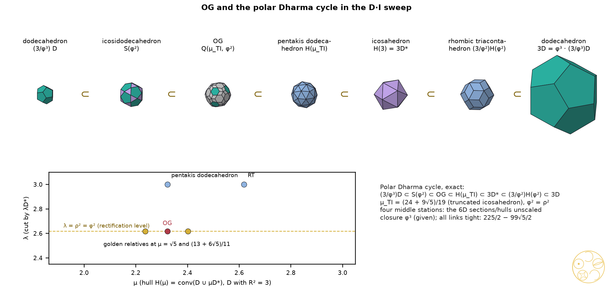
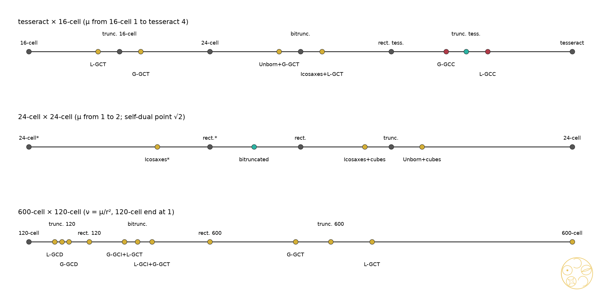
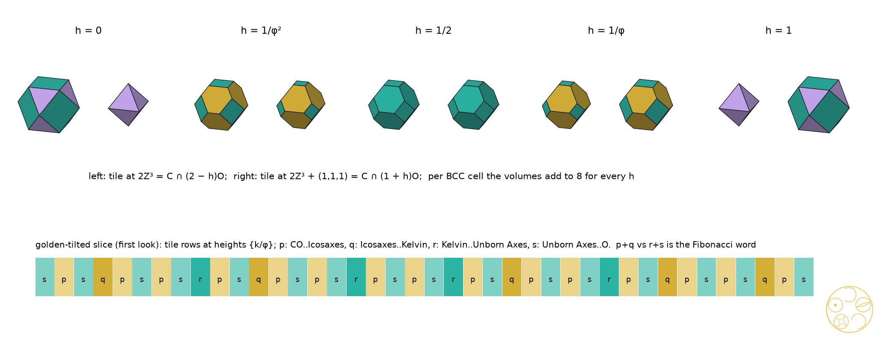

Each regular solid meets its dual in a six-dimensional product, and the regular four-dimensional solids meet theirs in eight. Which ratios does each pair pick out, and where do OG, the polar Dharma cycle and new cycles sit?
Put a solid and its dual side by side in a space of twice the dimension, and cut that space along a tilted flat. What you see in the cut is the solid trimmed by its dual: a corner-cut solid whose depth is set by the tilt. As the tilt turns, the cut passes through the whole family, from the dual solid to the solid itself, and DICTO's golden cuts are stations on the way. For the cube and octahedron, the 6D study found that a lattice in that space picks out Icosaxes at the golden tilt. Here we run the same experiment for the dodecahedron and icosahedron, for the tetrahedron with itself, and for the regular four-dimensional solids. The golden pair lives entirely with the golden ratio, yet no lattice can carry it. The tetrahedron's sweep is the tesseract's slicing seen another way. In four dimensions, polytopes appear whose every cell is a golden cut. DICTO's OG sits exactly where the dodecahedron's sweep meets its mirror, and the polar Dharma cycle walks through the sweep. New cycles close by φ.
Let P be a regular polyhedron with circumradius R, midradius ρ, inradius r and edge e, written as P = {n·x ≤ 1} (n over its face poles), and let P* = conv(n) = {v·x ≤ 1} be its polar. In the six-dimensional product P × P*, the flats Fμ = {(x, x/μ)} carry the diagonal symmetry (Schur, as in the 6D study), and the section is S(μ) = P ∩ μP*. Its polar is the hull: polar(S(μ)) = H(μ)/μ with H(μ) = conv(P ∪ μP*). We write ν = μ/r², so that the dual end is ν = 1.
Proof. The plane v·y = μ is perpendicular to the corner axis v and meets the edge from v to a neighbour w at v + x(w − v) exactly when μ = v·v − x(v·v − v·w) = R² − xe²/2; the dual side is the same statement for P*, read through S(μ) = μ(P* ∩ μ−1P). ∎ The golden cuts of #88 have xG = φ/(c + 2φ), xL = 1/(φc + 2) with c = cn = 2cos(π/n).
Take D with corners (±1, ±1, ±1) and (0, ±1/φ, ±φ) cyclic. This is the cube's own frame, with R² = 3 for the cube, the dodecahedron and the tetrahedron alike. Here r² = 1 + 2/√5, ρ² = φ² and R² = 3. All nine stations were built exactly and matched corner to corner with the cut solids (s1, 20/20 checks).
| station | μ (R² = 3) | ν = μ/r² | norm of ν |
|---|---|---|---|
| icosahedron (dual end) | 1 + 2/√5 | 1 | 1 |
| Lesser Golden Cut Icosahedron | √5 | 5√5 − 10 = 5/φ³ | −25 |
| truncated icosahedron | (24 + 9√5)/19 | (30 − 3√5)/19 | 45/19 |
| Greater Golden Cut Icosahedron | (13 + 6√5)/11 | (5 + 4√5)/11 | −5/11 |
| icosidodecahedron | φ² | 3 − φ | 5 |
| Greater Golden Cut Dodecahedron | 2 + √5/3 | (20 − 7√5)/3 | 155/9 |
| truncated dodecahedron | 1 + 4/√5 | 2√5 − 3 | −11 |
| Lesser Golden Cut Dodecahedron | (20 + 5√5)/11 | (50 − 15√5)/11 | 125/11 |
| dodecahedron (P end) | 3 | 15 − 6√5 = (R/r)² | 45 |
Two values recur across pairs (exact, no structural reason found). The D·I rectification ν = 3 − φ equals the μ of Unborn Axes. The truncated dodecahedron's ν = 2√5 − 3 equals the μ of the Greater Golden Cut Tetrahedron, and (R/r)² = 15 − 6√5 equals the T·T ν of the dual-side Lesser Golden Cut Tetrahedron.
Proof. An invariant lattice makes the representation rational. A 5-fold rotation has trace 1 + 2cos 72° = φ on V (checked on the exact matrix), hence 2φ on V ⊕ V, which is irrational. Any rational representation containing V also contains its Galois twin V′ (trace 1 − φ), and V ≇ V′. ∎ What Z⁶ does pick out is exact: the central sections of the Voronoi cells of Z⁶, D6* and D6 are the dodecahedron, icosidodecahedron and rhombic triacontahedron; the shortest Z⁶ vectors cast an icosahedron, the D6 roots two icosidodecahedra (radii ratio φ), and the vectors (±½)⁶ only dodecahedra and icosahedra (s2, 9 checks). These are the ends and the rectified stage only, with no golden cut among them (Al-Siyabi, Koca and Koca derived icosahedral polyhedra from D6; credited).
This reproduces the 6D study exactly: octahedron 1, Unborn Axes 3 − φ, truncated octahedron 3/2, Icosaxes φ, cuboctahedron 2, Greater Golden Cut Cube ≈ 2.304114, truncated cube 1 + √2, Lesser Golden Cut Cube ≈ 2.533609 and cube 3, with both cube values identical as exact strings (s1, 22 checks). The octahedron side is golden at the golden heights 1 + 1/φ² and 1 + 1/φ. The cube side needs Q(√2, √5), and in the lattice Z³ ⊕ Z³ the roots pick out μ = φ, which is Icosaxes.
With T inscribed in the cube [−1, 1]³, the polar is −T and r² = 1/3. The sweep runs −T (μ = 1/3), Lesser GCT 5 − 2√5, truncated tetrahedron 3/5, Greater GCT (3 + 2√5)/11, octahedron 1, Greater GCT 2√5 − 3, truncated tetrahedron 5/3, Lesser GCT 1 + 2/√5, and T at 3. The self-duality μ ↔ 1/μ is exact (s1, 20 checks).
Proof. The constraints xi ≤ 1 and xi ≥ −1 become two opposite tetrahedra, of sizes 1 − h/2 and 1 + h/2. Checked exactly at the three heights in a rational orthonormal frame (s3). ∎ Lattice. The vertex representation of Td is rational, so Z³ ⊕ Z³ exists, unlike for D·I. But the test does not discriminate. The vectors (0,1,1 | 2,−1,−1) and (−2,1,1 | 0,−1,−1), of norm 8, cast the section's corners at every μ (sweep orbits). The shortest isolated selectors are norm 3 (μ = 2), norm 4 (√3, 1 + √2), norm 6 (φ, a non-golden cut with ratio √5/2, computed by hand from Lemma 1) and norm 11 (the Archimedean 5/3). The golden tetrahedra need norm 34 (Lesser) and 46 (Greater); these are minima over the box {−6..6}⁶, each confirmed exactly. So no golden selection: a negative result.
DICTO proposed looking for a connection between OG and "the interactions of dodeca and icosa at interdimensional points". The D·I pair has two one-parameter families: the sections S(μ) (Archimedean side) and their polars, the hulls H(μ) = conv(D ∪ μD*) (Catalan side: pentakis dodecahedron at μTI, rhombic triacontahedron at φ², triakis icosahedron at μTD). Cutting a hull once more by the icosahedron planes gives the two-parameter family Q(μ, λ) = H(μ) ∩ λD*. Its polar is conv(S(μ)/μ ∪ D/λ), so the Hecatodihedron side is the truncated icosahedron family with a dodecahedron's corners added.
So the cycle is a path through the sweep, but at only two parameter values: the rectification level φ², which is a golden unit, and μTI, which is not golden (norm 9/19). The closure φ³ comes from the two loose ends, not from the sweep. Golden relatives. At the golden μ of the icosahedron side, Q(μ, φ²) has the same combinatorics as OG: 102 corners, 20 regular hexagons and 60 kites, at μ = √5 (Lesser GCI) and at μ = (13 + 6√5)/11 (Greater). Lattice. The test of Section 2 cannot be posed (Theorem 3). In the module M cast by Z⁶ (the Z-span of (0, ±1, ±φ) cyclic), the smallest integer scale that lifts OG's corners into M is 228 in our frame and 342 = 2 × 171 in the chain frame; this is twice the bridge study's 171, a factor 2 that presumably comes from a different module convention (not re-derived). The prime 19 comes from μTI: the truncated icosahedron and the pentakis dodecahedron need 38, the dodecahedron and the Lesser GCI need 2, and the Golden OG (DICTO's name; the golden relative at μ = √5) needs only 4 (the Greater one needs 220). The new framing therefore explains the 171 (it comes from the Archimedean depth, field norm 9/19) but does not remove it. Only the Golden OG lifts simply.

For P × P* ⊂ R⁸ the flats y = x/μ give P ∩ μP* again. As μ grows the section passes P*, truncated P*, rectified P*, the bitruncated stage, rectified P, truncated P and P, and the stage changes at the squared distances of the centres of the k-faces.
Lemma 6 (cells). A cell of P ∩ μP* on a facet of P is that facet's own 3D sweep, shifted linearly in μ (μ3 = μ − r²); cells on the facets of μP* follow the same rule in 1/μ. For the tesseract and the 24-cell this was checked exactly (rational frames, corner matching). For the 120-cell family it was checked exactly at three stations (consistency of the rule) and in floating point everywhere.
| pair | golden or notable μ, exact | what the cells are |
|---|---|---|
| tesseract × 16-cell (μ ∈ [1, 4]) | 3 − φ, φ; 2 + 1/φ², φ² = 2 + 1/φ; 1 + μG, 1 + μL (degree 4) | Lesser / Greater GCT + octahedra; Unborn Axes + Greater GCT; Icosaxes + Lesser GCT; Golden Cut Cubes + tetrahedra. Uniform: 3/2, 5/2, 2 + √2 |
| 24-cell × 24-cell (μ ∈ [1, 2]) | √2 (self-dual point, μ ↔ 2/μ); φ, (15 + √5)/10; and 2/φ, … | bitruncated 24-cell, 48 truncated cubes (C·O sweep at 1 + √2); Icosaxes / Unborn Axes cells + cubes |
| 600-cell × 120-cell (R = 1, r² = (7 + 3√5)/16) | (13 + 5√5)/28, (111 + 45√5)/244; 2 − √5/2, (19 + 9√5)/44; 3(√5 − 1)/4, (5 + 2√5)/10 | Golden Cut Dodecahedra + tetrahedra; Greater GCI + Lesser GCT, Lesser GCI + Greater GCT (bitruncated stage); GCT + icosahedra. Uniform: (15 + 8√5)/38, (11 + 3√5)/20, (9 + √5)/12 |
The tesseract × 16-cell sweep thus carries the C·O sweep (cube cells, μ3 = μ − 1) and the T·T sweep (tetrahedral cells, linear in 4D height) at once. It is golden at golden heights in the two lower unit layers and fails only in the top layer, the cubes, through √2. The 24-cell pair selects the silver ratio at its self-dual point. Corner counts and cell types of all stations were checked in floating point (s5, 17 checks).

A tight link A → B scales B down to the smallest copy that contains A, so that A touches B; the closure of a cycle is the product of its tight factors. Two-link rule (proof: P's corners are corners of H(μ), and the corner μn lies out by μ/r²): the cycle P ⊂ H(μ) ⊂ νP closes at ν. Every station's ν is therefore a closure.
| pair | cycle (tight links) | closure |
|---|---|---|
| all | sweep cycle P* → L* → A* → G* → rect → G → A → L → P → P* (each link but the last touches along P's faces) | (R/r)²: D·I 15 − 6√5, C·O 3, T·T 9 |
| C·O | cube ⊂ H(φ) (the hull at Icosaxes) ⊂ φ·cube | φ |
| C·O | cube ⊂ H(1 + √2) (triakis octahedron) ⊂ (1 + √2)·cube | 1 + √2 (silver) |
| C·O | cube → octahedron → Icosaxes → truncated octahedron → H(φ) → cube | φ³ = 2 + √5 |
| D·I | D → icosidodecahedron → Greater Golden Cut Dodecahedron → triakis icosahedron H(μTD) → D; factors (9 − 3√5)/2, 1, (16 + 7√5)/33, 2√5 − 3 | φ |
| D·I | D → rhombic triacontahedron → icosidodecahedron → Lesser Golden Cut Icosahedron → D; factors 1, 3 − φ, 1/2 + 3√5/10, 1 | φ |
| T·T | T → Lesser GCT (dual side) → Lesser GCT → truncated tetrahedron (dual) → T | φ⁶ = 9 + 4√5 |
| Dharma pattern | P → rect → Q(A*, ρ²) → H(A*) → P* → H(ρ²) → P (OG's analogue on each pair) | D·I 225/2 − 99√5/2; C·O 9/2; T·T 27 |
| 120-cell (4D) | sweep cycle 600-cell* → … → 600-cell | 1/r² = 28 − 12√5 (not golden) |
The search covered all tight cycles of at most five links from P back to P among each pair's 17 or 18 stations, in floating point with every quoted cycle re-checked exactly (s6). With φk as the target it found 119 golden cycles for D·I (all closing at φ), 73 + 165 + 4 for C·O (closing at φ, φ², φ³) and 255 for T·T (all at φ⁶); none for D·I closes at φ² or φ³. The Dharma pattern closes golden on none of the three pairs, and its OG-station can be replaced by the golden relative without changing the closure.
Labels confirmed: the truncated octahedron (TO) is S(3/2), the octahedron at its Archimedean depth; the rhombic dodecahedron (RD) is H(2) = conv(cube ∪ 2·octahedron), the polar of the cuboctahedron (14 corners, 12 rhombi, checked). The C·O Dharma-pattern cycle passes through the RD.
Nesting cycles (s8, exact). The cycle cube ⊂ RD ⊂ 2·TO ⊂ 2·cube has tight factors 1, 2, 1 and closure 2. The cycle cube → TO → RD → cube closes at 3. The cycle cube → RD → triakis octahedron → TO → cube closes at 1 + √2, and cube → RD → TO → H(φ) → cube at φ². Counting cycles of at most five links: 436 contain the RD or the TO and close at 2, 320 at 1 + √2, 109 at φ², 12 at (1 + √2)², and 2 at φ³ (both through the TO).
Space-filler cycles. All 64 cycles from the cube through ordered subsets of {RD, TO, Icosaxes, Unborn Axes} are exact. Their closures include 2 (cube → RD → TO → cube, and others), 3/φ (cube → Icosaxes → cube) and (15 + 3√5)/10; none is a power of φ. As nestings, then, the space-fillers give rational or non-golden closures only. The space-filling cycles that do exist are the honeycomb slices of Section 8, where every stage is a filling.
Hyper-lattice cycles for RD and TO. One honeycomb carries both: the 24-cell honeycomb. Vertex-first (D4 Voronoi cells |xi| + |xj| ≤ 1, slice x₄ = h) gives RDs on the FCC lattice at h = 0, then RD ∩ (1 − h)·cube with RD ∩ h·cube on the other coset, then cubes at h = 1/2 (volume per FCC cell 2 for every h, exact identity). Cell-first (slice y₁ = h) gives the BCC pair C ∩ (2 − h)O and C ∩ (1 + h)O, with TOs (Kelvin) at h = 1/2 and Icosaxes + Unborn Axes at h = 1/φ² (Section 8). Every stage of both cycles fills space. TRD: the trapezo-rhombic dodecahedron (DICTO's TRD node) has only hexagonal (D3h) symmetry and is the Voronoi cell of hcp, which is not a lattice. It is not a station of the cubic sweeps, and no lattice-honeycomb slice of the kind used here produces it. Not reached.
Golden Cut Rhombic Dodecahedra and Triacontahedra as 4D slices? A slice with full Oh symmetry must be perpendicular to an axis whose stabiliser contains Oh: the coordinate axes for B4, the root directions for F4, and for Ih in H4 the 600-cell corner directions (proof by stabiliser orders). All 15 Wythoff polytopes of each of B4, F4 and H4 were cut along these axes at 600 heights (H4: 150). The golden-cut-RD signature (8 triangles, 6 squares, 12 octagons) occurs in 9 F4 stages, never in B4. In none of them are the square and triangle sides equal where the octagon ratio could be φ: the only points with equal sides have ratio 0.2539. The golden-cut-RT signature (20, 12, 30) occurs in 2 H4 stages (the 120-cell and one relative), again never with equal corner sides (s9, s9b). Negative within this scope (floating point; tiles of the uniform honeycombs covered except sections of prism tiles away from their base). The lead "24-cell corner-first along (1, 1, 0, 0)" gives the RD at the centre and then cubes, as in Section 8, never a golden RD.
A family of parallel slices of a periodic honeycomb repeats with the honeycomb's period, so the honeycomb itself is the cycle (s7, 14 checks).

| pair | dim. | field | selected ratio, and why | golden stations, exact |
|---|---|---|---|---|
| pentagon / pentagram (c5 = φ) | 2 | Q(√5) | φ native: the pentagon's diagonal | #88's cn rule: golden truncated pentagon x = 1/3, 1/(φ + 3) |
| square / square (c4 = √2) | 2 | Q(√2) | silver: the diagonal √2; golden needs Q(√2, √5) | xG(4), xL(4) of degree 4 |
| D·I | 3 → 6 | Q(√5) | φ native in the solids, but no lattice (Theorem 3); natural values ρ² = φ², μL = √5 | all four on the sweep; OG at (μTI, φ²); Golden OG at (√5, φ²) |
| C·O | 3 → 6 | Q(√2) ⊕ Q(√5) | octahedron side φ (Icosaxes, roots at μ = φ); cube side silver 1 + √2 | Icosaxes φ, Unborn 3 − φ; GCC degree 4 |
| T·T | 3 → 6 | Q(√5) (golden) | golden in the tesseract coordinate (h = 1/φ², 1/φ); lattice: none (norms 34, 46) | 2√5 − 3, 1 + 2/√5 and reciprocals |
| tesseract × 16-cell | 4 → 8 | Q, Q(√5), Q(√2, √5) | golden heights in the two lower unit layers; √2 in the top layer | φ², 2 + 1/φ² (all-golden cells), φ, 3 − φ |
| 24-cell × 24-cell | 4 → 8 | Q(√2) | silver at the self-dual point √2 (bitruncated 24-cell) | φ, (15 + √5)/10 (Icosaxes / Unborn cells) |
| 120-cell × 600-cell | 4 → 8 | Q(√5) | φ native; golden cells at every stage; the cell rules are linear | 2 − √5/2, (19 + 9√5)/44 (all-golden cells) |
Golden ladder. In 2D to 4D the five-fold structures are native: the pentagon, the D·I pair and the 120/600-cell, all in Q(√5). Their golden stations are plentiful but are never picked out by a lattice, because no lattice carries their symmetry below dimension 6. In 6D and 8D the golden ratio appears hidden in a cubic lattice: the Fibonacci slope of Z³ ⊕ Z³ selects Icosaxes, and the tesseract's and 24-cell's golden heights carry golden cells. The cube side is the exception throughout: there the square's √2 wins, giving the silver ratio 1 + √2 as the truncated cube's μ, the 24-cell's self-dual point, and a silver two-link cycle.
Archimedean solids as the common part of a Platonic solid and its dual (Kepler; e.g. G. W. Hart's Archimedean-dual pages); truncation at any depth, ambo and truncation in Conway's notation; the bitruncated tesseract as the intersection of the tesseract–16-cell compound, and the 24-cell's bitruncation halfway to its dual (Wikipedia, "Truncated 24-cells", "Truncated tesseract"); sections of the regular 4D solids (Boole Stott 1900; Coxeter, Regular Polytopes); the 24-cell honeycomb's vertex-first slices (rhombic dodecahedral and cubic honeycombs) and cell-first slices (rectified and bitruncated cubic honeycombs) (Wikipedia, "24-cell honeycomb"); Zefiro (2011) on truncations of cubic solids by the rhombic dodecahedron and cube; the icosahedral Z⁶ cut-and-project (Kramer–Neri, Duneau–Katz, Elser) and icosahedral polyhedra from D6 (Al-Siyabi–Koca–Koca 2020); #48's mixed truncated octahedra (Koca's orbit); #88, #89 and the 6D study. Sturmian/Fibonacci coding of irrational rotations is classical. Library (dicto-big-brother, kaleidohedra-references): reading list searched for truncation, Wythoff, Kelvin, bitruncated, Fibonacci; no source found for the golden stations of the D·I and T·T sweeps as sections of the 6D products, OG as Q(μTI, φ²), the all-golden 4D cells, or the golden tight cycles. Where an earlier source has one of these solids, it stays in DICTO's family, found independently, and the source is credited.
Data and code. studies/2026-11-03-dual-pairs-dimensions: dp_lib.py (on sixd_lib.py and cubes_lib.py of the 6D study, unchanged); s1_sweeps.py (co/di/tt: 22, 20, 20 checks), s2_di_lattice.py (9), s3_tt.py (9), s4_og_dharma.py (21), s4b_og_lattice.py (3), s4c_relatives.py (2 + 2), s5_fourd.py (17), s6_cycles.py (co/di/tt: 10, 12, 10), s7_hyper.py (14), s8_rd_to.py (4), s9_golden_rhombic.py and s9b_rhombic_ratios.py (B4/F4/H4 search, floating point), figs.py. All checks pass. Run on dicto-big-brother with ~/geom/bin/python, each step under 170 s.